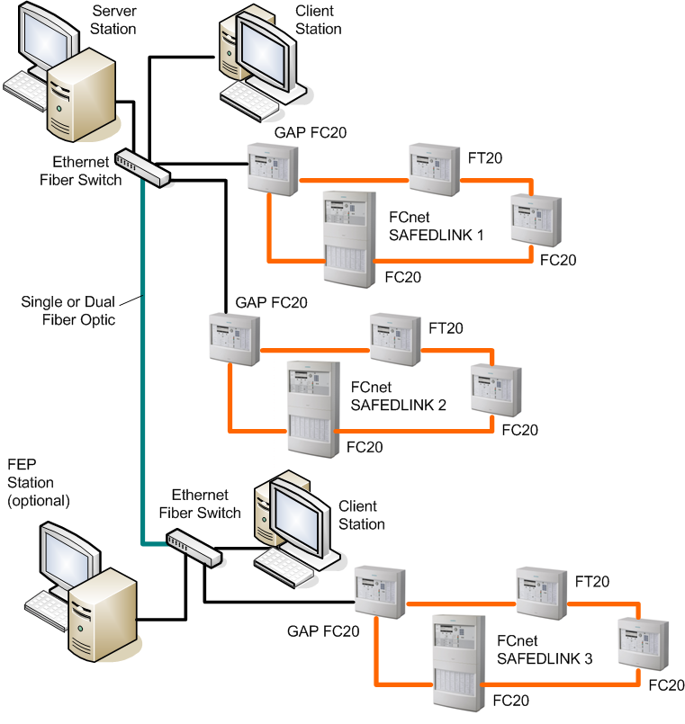
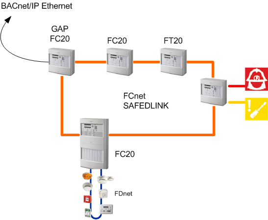
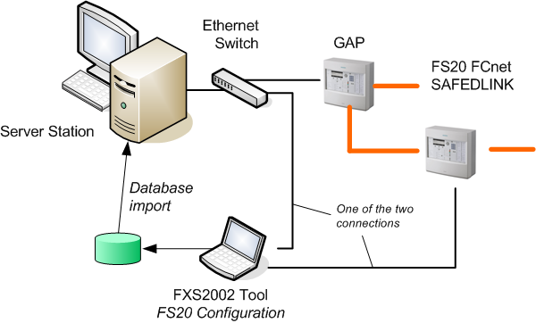

FS20 Fire System Architectures
Fire detection systems can be connected to Desigo CC to implement various configurations. The following are examples of valid system architectures.
Stand-Alone and Client/Server Management Station
Fire systems can be realized with a stand-alone management station as well as client/server network architecture.
In single-station solutions, the SAFEDLINK fire network is connected to the unique management station via the GAP unit.
In local client/server solutions, the connection to the fire network is implemented on the server station that provides communication services to the client stations.
Client/server solutions can also support multiple SAFEDLINK fire networks connected to the server station over a network.
Additional client and FEP stations may be installed as necessary.

SAFEDLINK Network
Fire control panels and terminals are networked together on a SAFEDLINK, a fast and redundant network designed for fault-tolerant fire protection solutions that applies a specialized protocol.

Service Engineering
In the system configuration, you must define a network data structure (BACnet) as one of the Field Networks of the system to allow for the control panels data (SiB-X XML metafiles) to be imported and populate the management station database.
The tool can be connected to any fire panel (except the GAP) or to the Ethernet switch.
